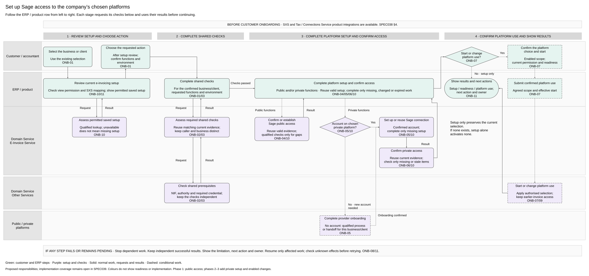

Four stages across the top. Follow the ERP / product row from left to right. Supporting checks stay under their stage. Scroll horizontally to inspect the full diagram.
Editable Draw.io · PNG preview
